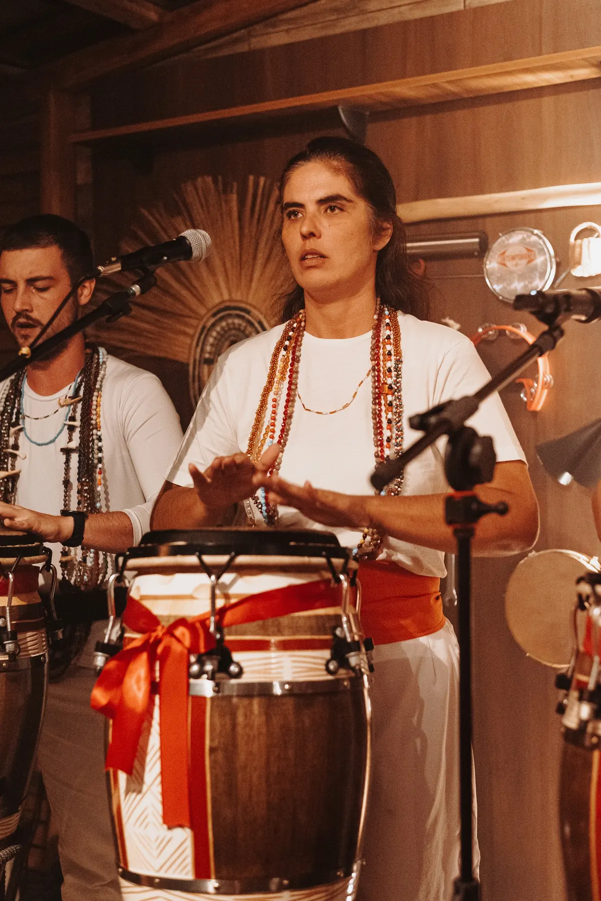
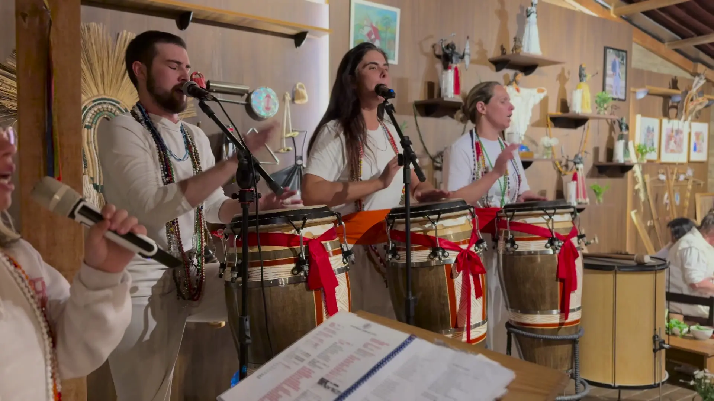
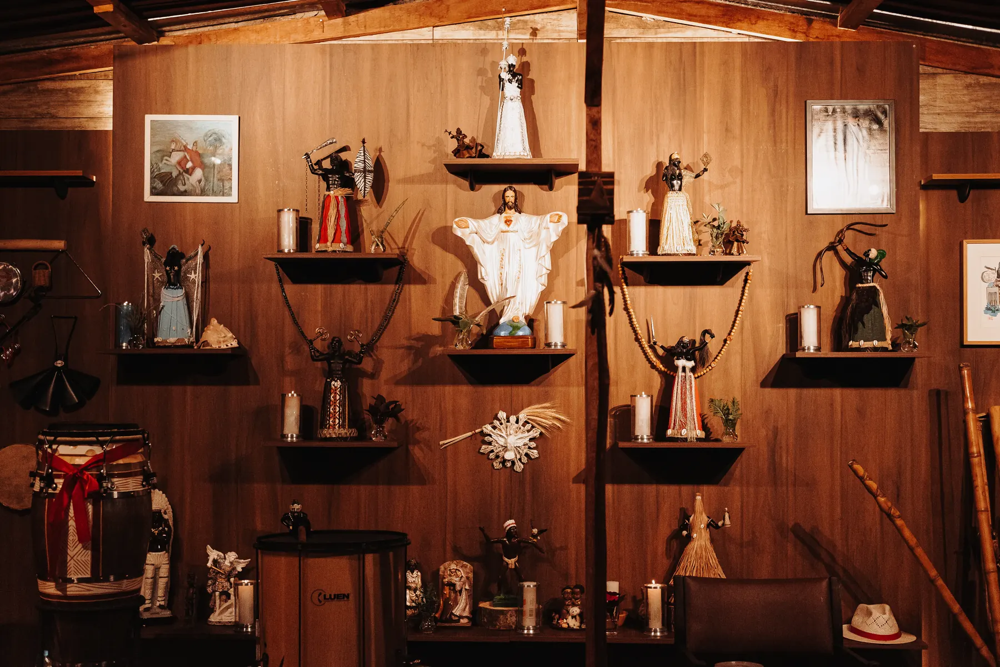
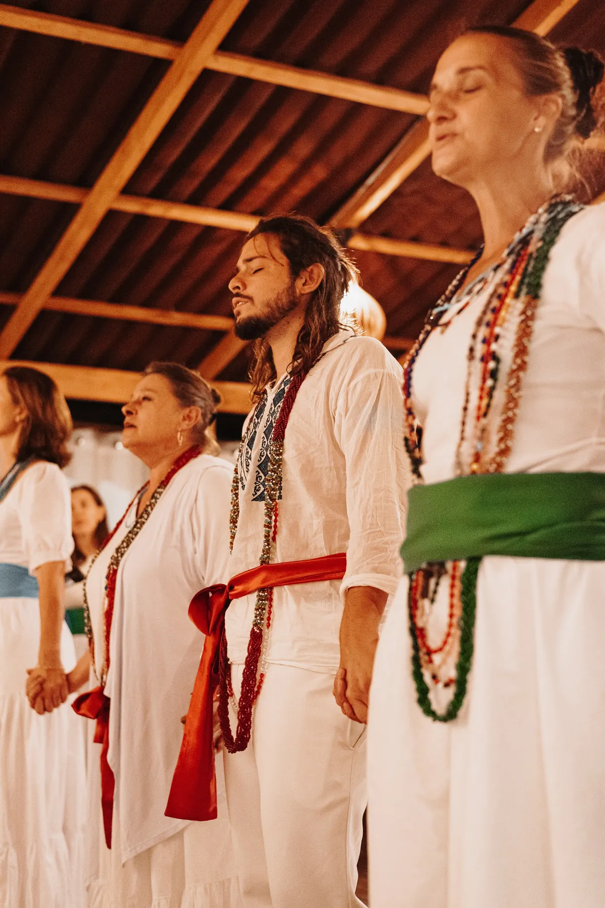
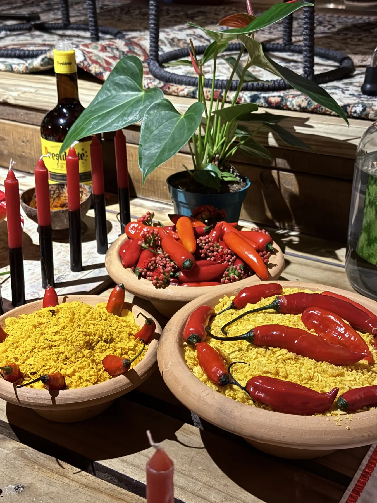
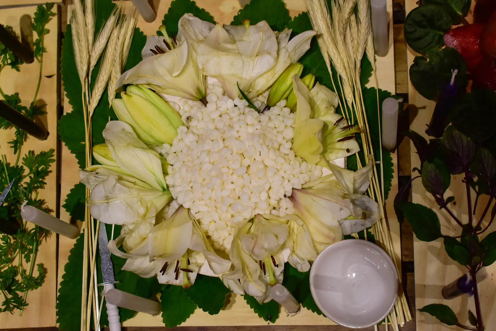
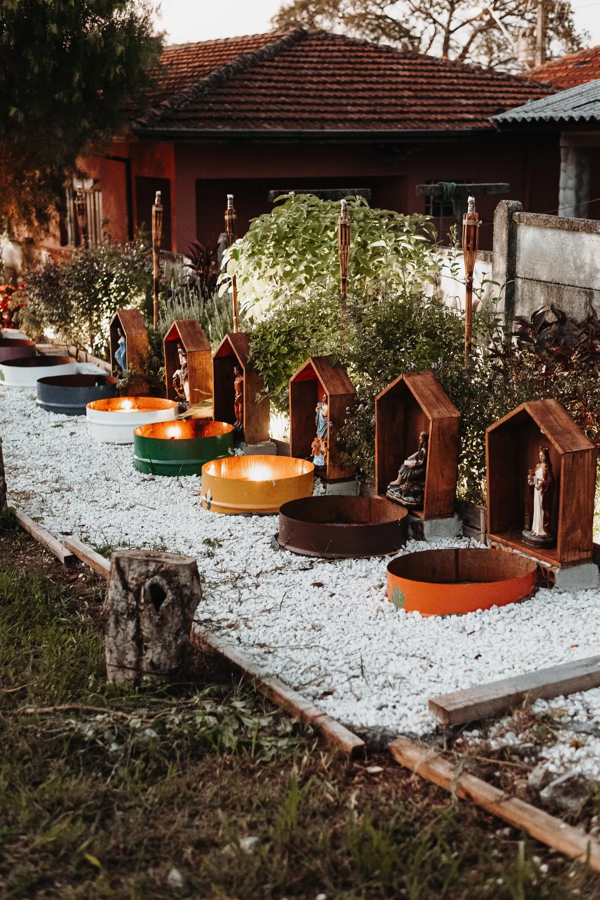
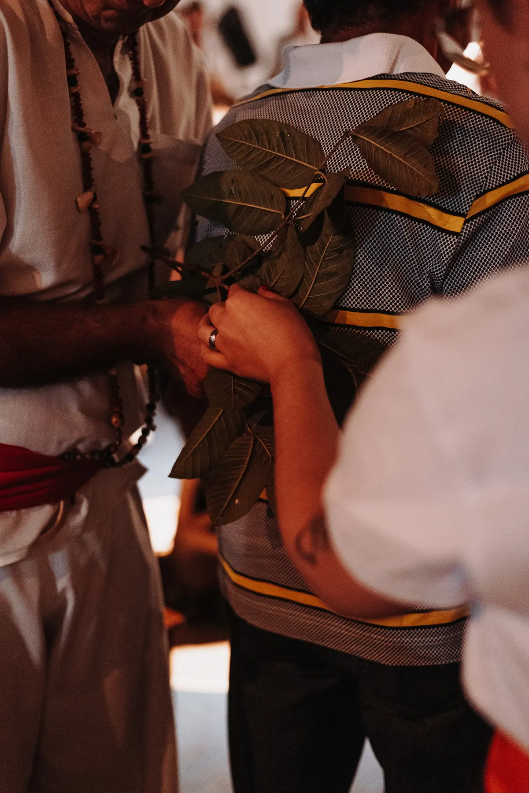
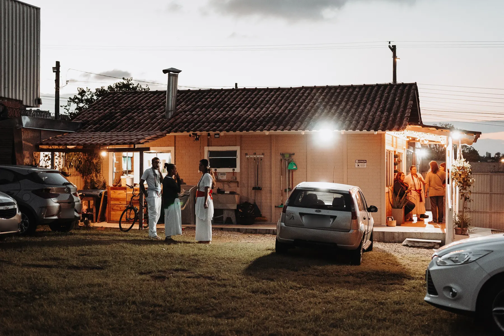
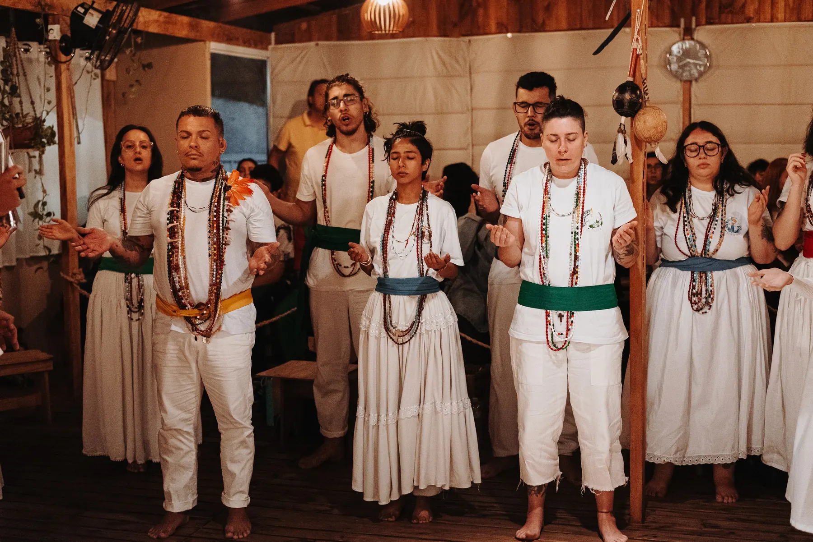

O atabaque
Se a entidade dirigente é o cérebro da gira, o atabaque é o coração. Cada canto é uma oração.

Curitiba · Jardim Botânico
Somos lar antes de sermos templo.
Gira aberta e gratuita toda segunda, às 19h30. Senhas a partir das 19h.
“Uma corrente que una a disciplina com o amor será, verdadeiramente, uma corrente de aço.”Caboclo Akuan
Elo 01 · Nossa Umbanda
Assim Pai Fernando de Ogum chamou o jeito de fazer Umbanda que herdamos: simples e sem mistificações, onde prevaleça o respeito mútuo, a caridade e o amor fraterno.

Umbanda simples, eficaz e profunda: fiel aos cantos dos antigos e corajosa para dialogar com o mundo de hoje.
Elo 02 · Sua primeira vez
É normal chegar com dúvida, ou até com um pouco de medo. Na CUCA tudo tem ordem, e alguém da casa vai te orientar desde o portão.

Roupa limpa e discreta, de qualquer cor. Evite perfume forte e bebida alcoólica no dia.
Choro, arrepio ou emoção forte acontecem. Avise com discrição alguém da casa. Você não fica sozinho.
Cada pessoa é um elo. Segure o botão e veja a roda se fechar.
Elo 03 · O que não fazemos
Não distinguimos cor, etnia, trajetória espiritual, orientação sexual ou gênero. Respeitamos quem nos respeita.
Elo 04 · A gira por dentro

Se a entidade dirigente é o cérebro da gira, o atabaque é o coração. Cada canto é uma oração.

Médiuns de branco, cada um em sua função: incorporação, passe, sustentação, cambonos, curimba.

Exus e Pombagiras guardam a casa. Por isso, ao chegar, pedimos licença na Tronqueira.
Elo 05 · Raízes
 1987Pai Fernando de Ogum abre a primeira gira do Terreiro do Pai Maneco, em Curitiba.
1987Pai Fernando de Ogum abre a primeira gira do Terreiro do Pai Maneco, em Curitiba. 2009Pai Léo de Oxóssi é consagrado Pai de Santo. A família firma o elo com a Umbanda.
2009Pai Léo de Oxóssi é consagrado Pai de Santo. A família firma o elo com a Umbanda. 2022Pai João Lucas de Ogum recebe o cruzamento de Pai de Santo.
2022Pai João Lucas de Ogum recebe o cruzamento de Pai de Santo. 2025Nasce a CUCA: Casa de Umbanda Corrente de Akuan.
2025Nasce a CUCA: Casa de Umbanda Corrente de Akuan.Elo 06 · Perguntas
Não. Passes e consultas são gratuitos. Se quiser ajudar a manter a casa, existe o PIX, sempre voluntário.
Não. A porta é aberta a todas as pessoas, de qualquer crença.
Pode, sempre acompanhada de um responsável e em silêncio respeitoso.
Não, sem autorização da casa. O que acontece na gira é sagrado e confidencial.
Pessoas idosas, gestantes e pessoas com condição especial têm prioridade. Avise na chegada.
Tem, no local, por R$ 12,00. Estacione onde a equipe indicar.
O caminho começa como consulente. Veja a página Quero Ser Médium.
Elo 07 · Conheça a casa

Três gerações de fé até a CUCA.

Caboclo Akuan e os mentores que conduzem as giras.

Os 9 Orixás cultuados na casa e as 10 linhas de trabalho.

Preceito, vela e oração, amalá e banho de ervas.

As 16 ervas da casa, organizadas pelos 4 elementos.

Tudo o que acontece da chegada até a saída.

Os 7 passos para entrar na corrente.

Guia do Médium, pontos cantados e ritual de abertura.
Podcast
O podcast da casa: conversas sobre Umbanda, fundamentos e o dia a dia da corrente, para ouvir onde você estiver.
Ouvir no SpotifyGiras, festas, avisos e o dia a dia da casa.
Seguir no InstagramElo 08 · Venha
A CUCA se mantém com a ajuda de quem acredita nela.
correntedeakuan@gmail.com